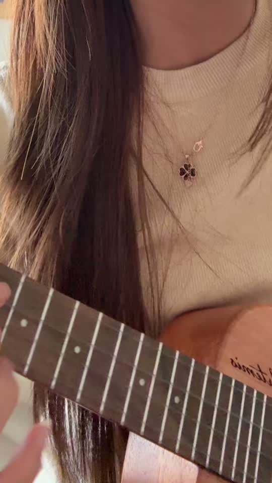

视频是唯一亮面
不做缩略图浏览。导入后立刻进入预览，用画面本身判断对不对。
手机是随身的校对遥控器，iPad 是能摊开的工作台。视频始终是唯一主角， 播放头同时驱动字幕、和弦和小节高亮；其余控件退到墨色里。
不做缩略图浏览。导入后立刻进入预览，用画面本身判断对不对。
字幕、和弦、小节、指法都跟随同一个时间点；点哪里，哪里就跳过去。
手机只保留当前句和下一步；完整的逐句、逐字、逐小节编辑留给 iPad。
从预览到校对，再到工程与导出。底部四栏固定，当前页只做一件事。
视频 + 双层字幕 + 和弦条

点画面播放 / 暂停逐句定位，点一句跳到那一拍
小节 + 按字对齐，一眼看出持续关系
和弦持续到下一次变化 · 点字后再点和弦改它
工程库与导出抽屉，动作只有一步
1080 × 1920 · H.264 · AAC
保持屏幕常亮 · 可以随时取消
左侧工程、中间预览、右侧检查器。点右上角的收起按钮，检查器会让位给视频。
03:18 · 68 BPM · 4/4 · C 调 · Capo 0
字幕、和弦、指法都在同一个叠加层里，导出与预览同源。
1080 × 1920 · H.264 · AAC · 30fps
保持屏幕常亮 · 可以随时取消
不是把桌面缩小，而是把决定性的信息留在手里。
编辑、歌词、和弦、工程各自成页，避免在手机上堆三栏。
播放、跳转、切和弦都按手指尺寸设计；hover 只作为桌面增强。
“编辑当前句”“开始导出”固定在安全区上方，列表只滚内容。
当前句和下一句分层，背景只做可读性，不把整块画面压黑。